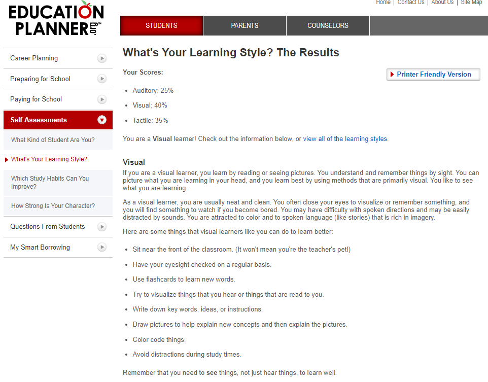
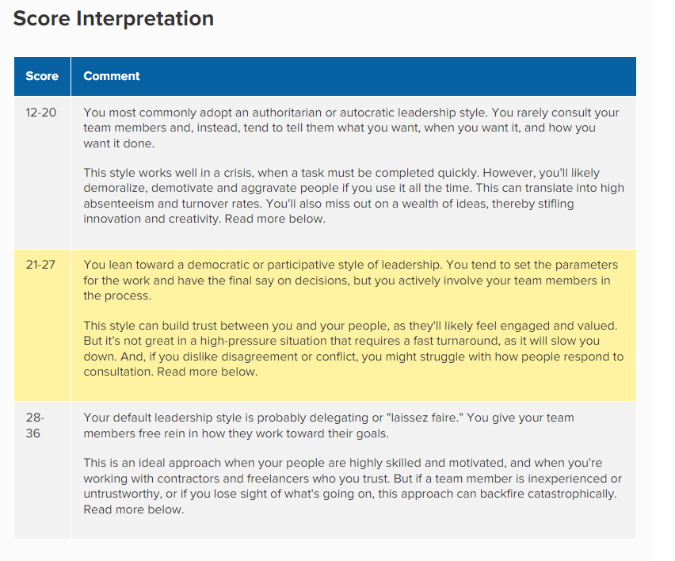

Test 1: Myers-Briggs Test

Test 2: Learning Style Test
Test 3: Leadership Style Test
Interpretation of Results
These tests gave a very interesting insight into some aspects of myself I had not yet considered.
The Myers-Briggs test I found especially resonated with a lot with my own personal outlooks on life and my held values/beliefs. It explained how I can be an effective leader given my pursuit to do what is right and often go out of my way to help others and try make the world a better place. However, along with this this personality type it depicts as also being prone to being unrealistic, overly empathetic and at times too straight forward. Given this alluded to a sense of leadership I decided to take a separate online test to gauge my leadership style finding that I border on being a democratic/participative and a laissez faire style leader. As for my learning style, the test considered me a visual learner to which I definitely agree with.
In all, these results tell me that I a passionate and reliable person who is capable of leading a team but with a tendency to do so in a more relaxed cooperative manner who takes on information visually and by doing.
I think with these results I will be more aware of my weaknesses and strengths and use this information in a way so that I can best contribute to the team.
When forming a team I think it is important to get people who may have strengths different to my own so that we can have a well-rounded team.